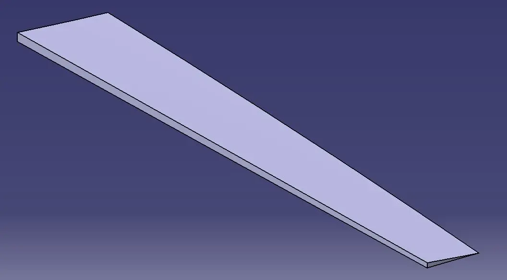
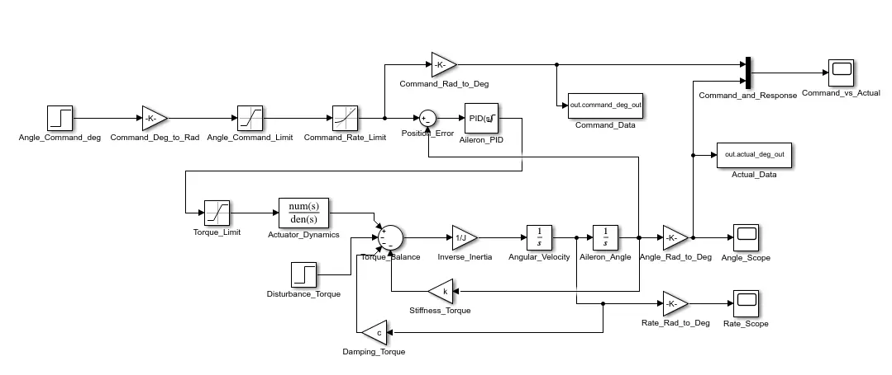
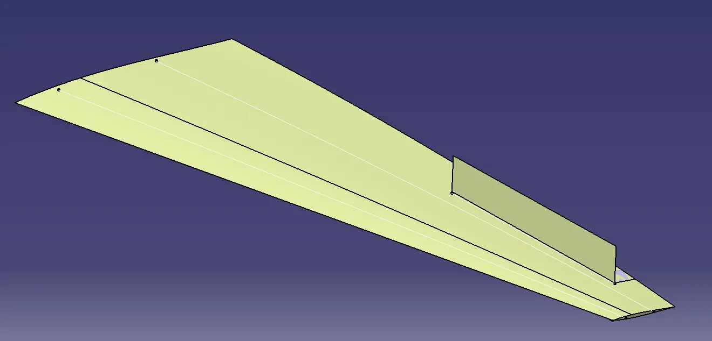
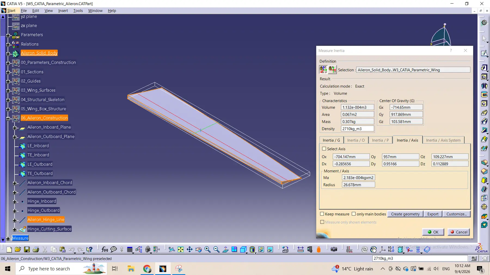
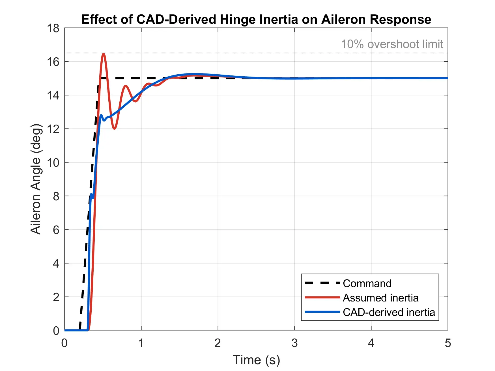
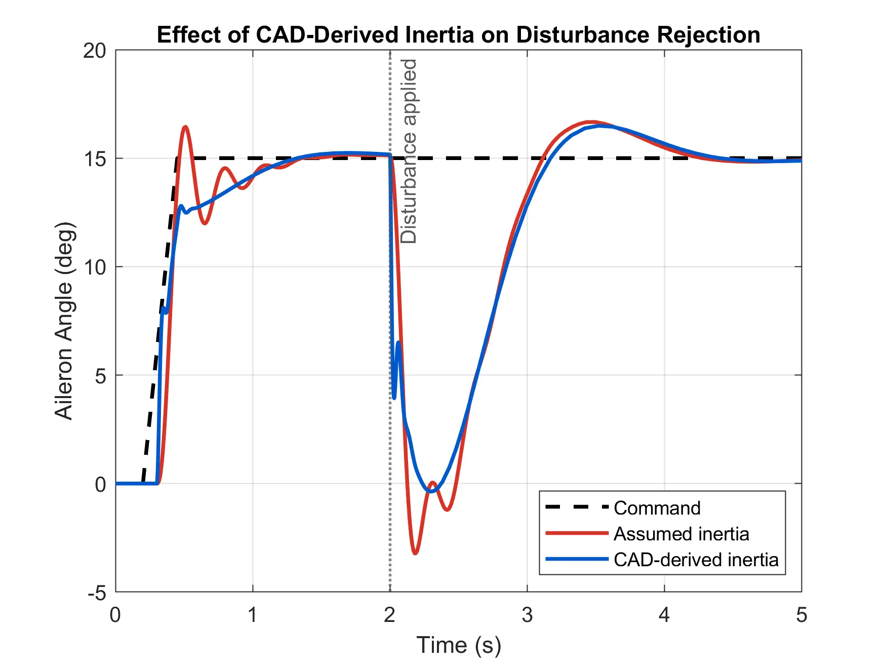

Derivative-filter coefficient N = 50, with output saturation and clamping anti-windup.
← Selected work
CAD-informed dynamics · actuator limits · PID control
Aircraft Aileron Actuator Modelling and Control
A reduced-order control-surface study linking CATIA V5 mass properties to a MATLAB/Simulink actuator model, then evaluating command tracking and disturbance rejection under physical angle, rate, and torque limits.
- Role
- Independent CAD and controls development
- Platforms
- CATIA V5 · MATLAB R2020b · Simulink
- Controller
- Continuous PIDF with anti-windup
- Deliverables
- CAD properties · model · verification results

ScopeCAD-informed reduced-order simulation. Damping, stiffness, actuator dynamics, and disturbance load are modelling assumptions; aerodynamic hinge-moment identification and hardware validation remain future work.
Overview
Connecting physical geometry to control-system behaviour
The project began with a standalone rotational actuator model, including compliance, damping, first-order actuator dynamics, command shaping, and physical saturation. A filtered PID controller was tuned against explicit tracking requirements before the assumed inertia was replaced with a hinge-axis value calculated from the CATIA model.
Running both inertia cases with identical controller settings isolates the influence of the CAD-derived property. The result is a traceable comparison rather than a disconnected CAD exercise and controls exercise.
Dynamic model
A constrained closed loop built around rotational mechanics
The mechanical plant balances actuator torque against disturbance, damping, and stiffness. Two integrators recover angular rate and position from angular acceleration.
Equation of motion
Jδ̈ + cδ̇ + kδ = Tact − Tdist

First-order response with an 8 N·m torque limit.
Position and command-rate constraints included directly in the loop.
CAD-to-controls link
Hinge-axis inertia measured from the model—not inferred from a global axis
The aileron was isolated between the inboard and outboard stations, split at the hinge line, assigned aluminium density, and measured about its actual rotation axis.


MaterialAluminium
Mass0.307 kg
Radius of gyration26.678 mm
Hinge inertia2.183 × 10−4 kg·m²
Command tracking
All baseline requirements passed after the CAD update
The controller was not retuned after replacing the assumed inertia. This preserves a direct comparison and tests whether the existing closed loop remains acceptable.

| Metric | Assumed inertia | CAD inertia |
|---|---|---|
| Rotational inertia | 0.025 kg·m² | 2.183 × 10−4 kg·m² |
| Peak angle | 16.442° | 15.240° |
| Overshoot | 9.610% | 1.603% |
| Rise time | 0.101 s | 0.537 s |
| Settling time | 0.860 s | 0.948 s |
| Steady-state error | −0.0001° | −0.0006° |
| Requirement result | PASS | PASS |
Robustness characterization
Response to a sustained 1.5 N·m opposing disturbance
A step disturbance was applied at 2.0 s. No after-the-fact pass criterion was imposed; the test is reported as a comparative characterization of excursion and recovery.
| Metric | Assumed inertia | CAD inertia |
|---|---|---|
| Minimum angle | −3.219° | −0.371° |
| Maximum angle | 16.664° | 16.492° |
| Maximum deviation | 18.219° | 15.371° |
| Time of maximum deviation | 2.180 s | 2.298 s |
| Recovery time | 2.026 s | 2.120 s |
| Final error at 5 s | 0.1375° | 0.1282° |

Engineering outcomes
What the integrated study demonstrates
Traceable multidisciplinary workflow
- Associative aileron extraction from a parametric wing
- Mass and inertia measured about the functional hinge axis
- CAD property transferred into a dynamic control model
- Same controller retained for controlled before-and-after comparison
Verification discipline
- Explicit command-tracking requirements
- Angle, rate, and actuator-torque saturation
- Filtered derivative and anti-windup treatment
- Separate baseline and disturbance datasets
Project data